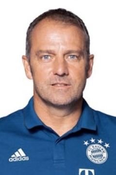

Bayern Munich, in full Fussball-Club Bayern München, also called FC Bayern Munich, German professional football (soccer) club based in Munich. Bayern Munich was founded in 1900 and has become Germany’s most famous and successful football club. Almost all of Bayern’s success has come since the 1960s. Bayern Munich was formed when members of the MTV 1879 Munich sports club broke away to form their own club. After winning the South German Championship in 1926, the club won its first national title in 1932 by beating Eintracht Frankfurt. After World War II, football in West Germany was played in five regional leagues, the top divisions of which were called Oberliga. Bayern played in the Oberliga Süd (“South”) and won the German Cup for the first time in 1957. In 1963 a West German national league, called the Bundesliga, was launched, and Bayern gained promotion to the league for the 1965–66 season. By the end of the 1960s, Bayern’s team contained three of the greatest German footballers of all time: goalkeeper Sepp Maier, forward Gerd Müller, and defender Franz Beckenbauer. Müller was the Bundesliga’s top scorer for seven seasons and remains the league’s all-time leading scorer. With strong support from other outstanding German players, such as Uli Hoeness and Paul Breitner, Bayern began accumulating trophies at a remarkable rate. It won the European Cup Winners’ Cup in 1967, its first Bundesliga title in 1968–69, the Intercontinental Cup in 1976, and three European Cups (now known as the Champions League) in a row (1974, 1975, 1976), the last team to achieve that feat. Bayern’s most lopsided Bundesliga victory also occurred during that period: during the 1971–72 season it beat Borussia Dortmund 11–1. Other notable footballers who have played for Bayern after the 1960s include midfielder-defender Lothar Matthäus, goalkeeper Oliver Kahn, and striker Miroslav Klose. Bayern’s success in the 1960s and ’70s propelled the club to the forefront of German football. In total, the club has won the Bundesliga 28 times, the DFB Cup 19 times, and the League Cup 6 times, as well as one Union of European Football Associations (UEFA) Cup (1996) and five European Cup/Champions League titles. The team’s fifth Champions League title came in 2013, when Bayern became the first German club to capture a “treble” by winning that continental championship, the Bundesliga, and the DFB Cup in the same season. Bayern played at the Grünwalder Stadium from 1925 until 1972, when it moved into the Olympic Stadium (built for the 1972 Munich Olympic Games), which it shared with in-town rival TSV 1860. Both clubs moved again in 2005 after the completion of the Allianz Arena; designed by Herzog and de Meuron, the arena holds 69,000 spectators and has an unusual external design, with more than 2,500 diamond-shaped panels on the outside that can be lit to display a range of colours.
| Manger Name | Manger Photo | Manger Nationality |
|---|---|---|
| Hans-Dieter Flick |  | Germany |